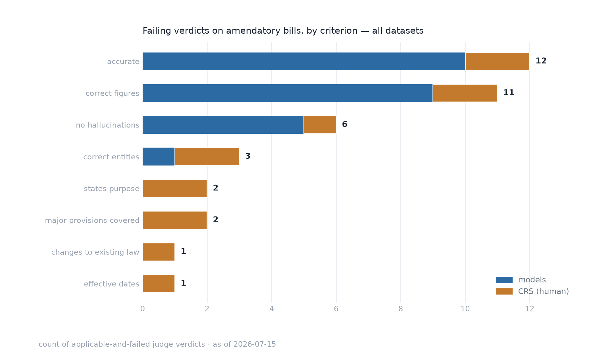

Are reauthorization bills harder?
Reauthorization and other amendatory bills mostly modify existing law — "strike '2024' and insert '2029'" — so the meaning lives in the statute being amended, not in the bill text itself. That could make them harder to summarize and harder to judge. This page slices the benchmark's existing verdicts three ways: do amendatory bills score differently, what actually fails on them, and does the judge behave consistently on them? Every bill is classified from its stored title and text (categories: amendatory/reauthorization, appropriations, CRA disapproval, standalone), and every count below is auditable.
Loading…
Pass rates by bill category
Share of summaries passing every applicable criterion, models (pooled) vs. the human CRS baseline, per dataset. Counts are shown on every bar — per-category n is small, so read the counts, not just the rates.
![Grouped horizontal bar chart of meets-standard rates by bill category for three datasets. 119th Congress: models pass 69 of 70 amendatory, 60 of 60 CRA disapproval, 120 of 120 standalone summaries; the human CRS baseline passes 13 of 14, 12 of 12, and 22 of 24. 2024 high-activity: models 66 of 70 amendatory, 20 of 20 appropriations, 58 of 60 CRA, 98 of 100 standalone; CRS 13 of 14, 4 of 4, 12 of 12, 20 of 20. 118th appropriations and NDAA set: models 9 of 15 amendatory, 20 of 30 appropriations, 4 of 5 standalone; CRS 1 of 3, 4 of 6, 1 of 1.](assets/reauth-pass-rates.png)
What fails on amendatory bills
Every failing judge verdict on an amendatory bill, counted by criterion. The amendment-tracing criterion itself (changes to existing law) almost never fails — failures concentrate in accuracy and figures, and on the largest bills.

Judge consistency by category
Three consistency/harshness proxies (not accuracy measures): how often the judge passes the human CRS gold summary; how often it marks changes to existing law applicable (on amendatory bills this should approach 100% — the classifier and the judge cross-validate); and on how many bills it marked a conditional criterion applicable for some candidates but not others on the same bill.
Caveats
- Small n. Amendatory bills number 14, 14, and 3 per dataset — differences of one or two bills move the rates a lot. That's why every figure carries its count.
- The 119th set is saturated. All five models pass ~everything there, so category differences can only show up in the 2024 and long-bill datasets.
- Categories are heuristic. A bill is "amendatory" if its title says
reauthorization/extension or its text has ≥ 0.5 amendatory operations ("is amended", "by
striking", …) per 1,000 characters — thresholds and per-bill labels are published in
data/reauth.jsonfor audit. Appropriations and CRA disapproval bills are kept separate because they fail differently (or barely amend law at all). - Known corpus quirks inflate the human failures. Two amendatory-bill CRS
baselines describe a different bill than the stored text (
118-hr-5009,118-s-2073— documented in the changelog); several of the human baseline's purpose/coverage failures trace to these mismatches, not to CRS analysts. - Pooling mixes pipelines. The three datasets were judged by different routes (API judge with web search vs. Claude Code subagents; full text vs. sectional grounding), so cross-dataset totals are indicative only.
How it's measured
Entirely offline — no new model calls. src/reauth.py
classifies every stored bill from its title and text; src/analyze_reauth.py joins
the labels to the committed per-criterion verdicts in docs/data/results*.json and
writes docs/data/reauth.json; src/plot_reauth.py renders the charts.
Reproduce with python src/analyze_reauth.py && python src/plot_reauth.py.